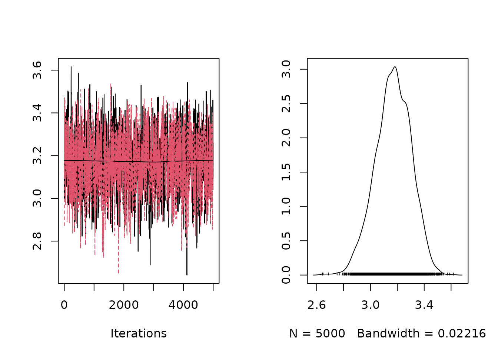
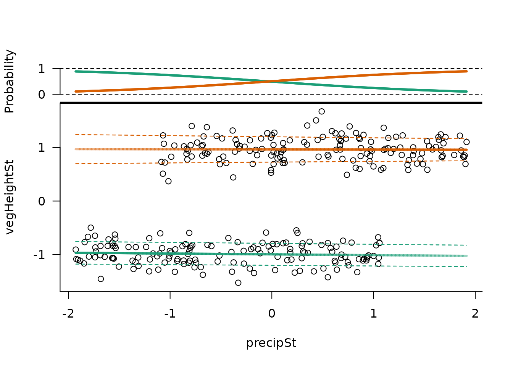
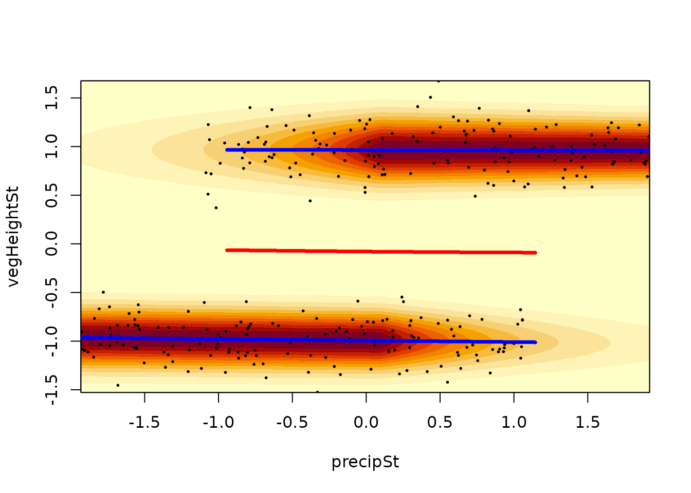
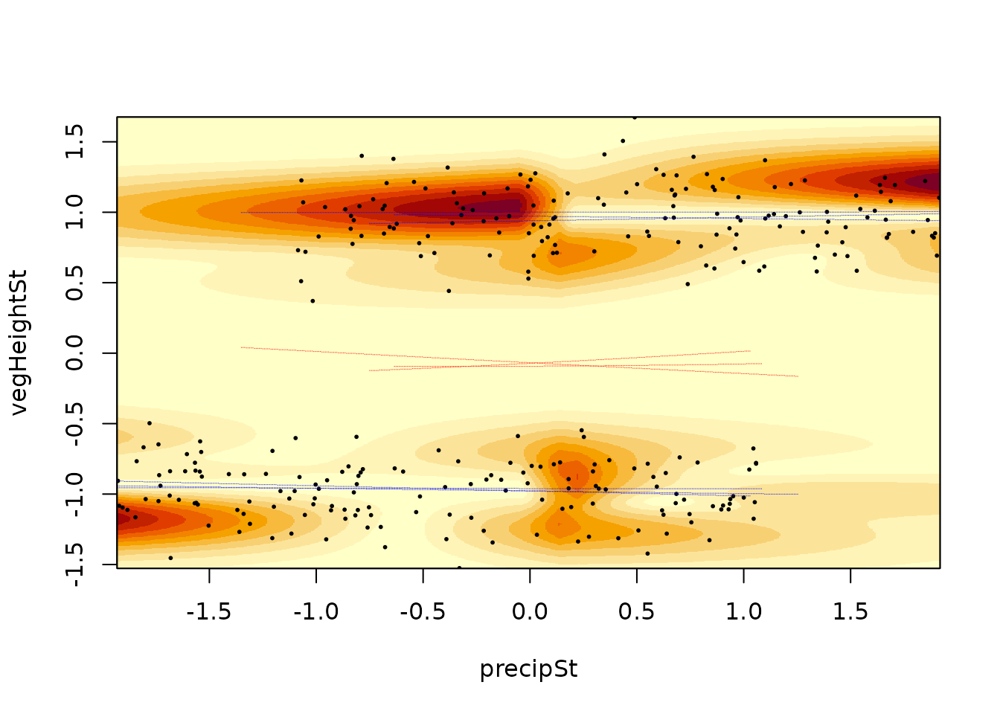
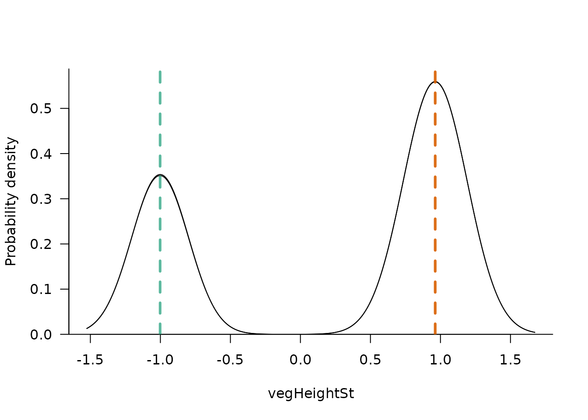
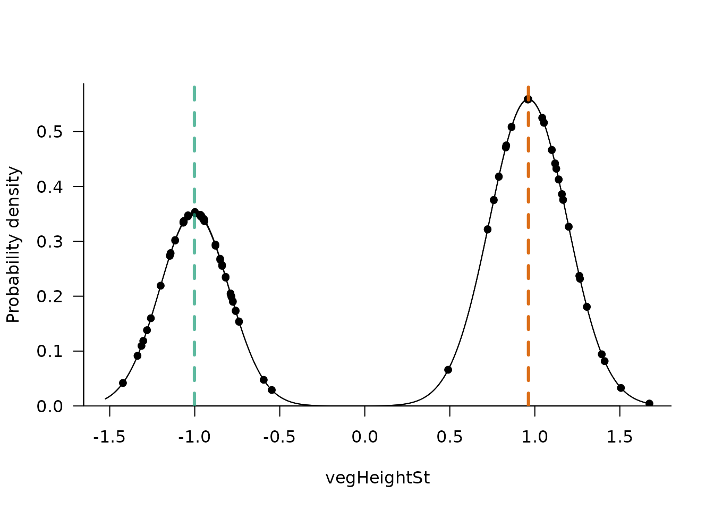
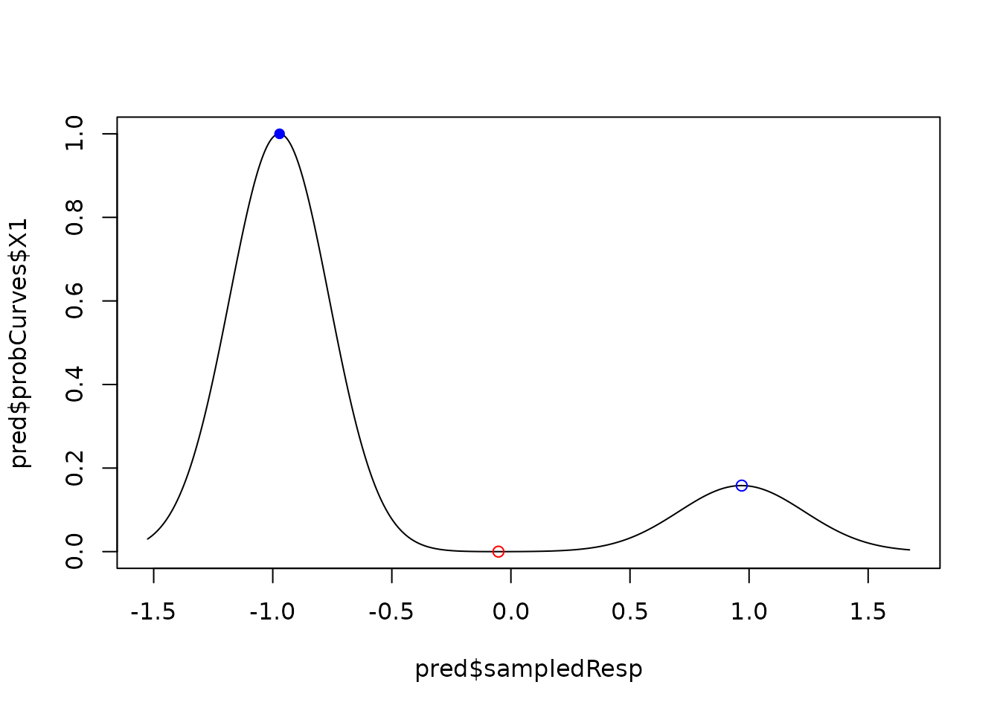

Mixture models with *mixglm*
Contents
mixglm.Rmdmixglm is an R
package for fitting mixture models. This vignette documents its
use.
Installation
The package mixglm uses NIMBLE which requires a compiler such as Rtools.exe. For installation instructions see: NIMBLE.
To install the development version of the mixglm package from GitHub use:
# install.packages("remotes")
remotes::install_github("adamklimes/mixglm")Introduction
mixglm uses a Bayesian framework via NIMBLE to fit mixtures of regressions.
It provides flexibility in the specification of these regressions
allowing their mean, precision, and probability to be dependent on up to
multiple predictors. It supports normal, beta, gamma, or negative
binomial distributed response variables.
Mixtures of regressions can be used for various purposes. Mixture models
can be used as a semi-parametric way for modelling variables with an
unknown distribution (McLachlan & Peel, 2000). They can be used
in cluster analyses, or in resilience modelling (ecology) for
parametrization of stability landscapes.
The mixglm package provides tools for exploration of results
such as computations and visualizations of mixtures. While these tools
are usable for all above mentioned purposes, they are described in the
terminology of resilience modelling in this vignette.
mixglm for resilience modelling
Resilience is often illustrated using a ball rolling on a curve,
where the ball represents a system which rolls into a valley
representing a stable state. Due to a disturbance or internal
stochasticity, the ball can be pushed up from the stable state.
Resilience can be then defined as either local or non-local stability of
the ball on the curve. If the slopes of the valley are steep, the system
is locally stable and highly resilient (so called engineering
resilience). If the nearest hill (local maximum of the curve, a
tipping point) is far from the system position, then the system
is stable also non-locally and has high ecological resilience
(see review Dakos & Kéfi,
2022).
This stability curve can change its shape along external
predictors creating a so-called stability landscape (see
Klimeš et al., 2024).
Mixture of regressions can be used to parametrize this stability
landscape. From it, stability curves for predictor values of interest
can be explored and the position of instances of a system (e.g. observed
ecological systems) along these curves can be evaluated. mixglm
offers tools for such purposes, ranging from stability landscape
calculation and visualization, depiction of specified stability curves,
to calculation of several metrics of ecological resilience.
Fitting mixture models using mixglm
In mixglm, it is possible to fit mixtures with a predefined number of components that have normal, beta, gamma, or negative binomial distribution (all components have the same distribution). For each component, its mean, precision, and probability within the mixture can be defined as being dependent on predictors which can differ between components (and also between mean, precision, probability sub-model). In the following we present a step-by-step guide for fitting a mixture model using mixglm.
Package set-up and data preparation
We start by loading the mixglm package and generating data for the example. We generate two example variables, one representing a precipitation gradient and the other being a proxy for ecosystem state - such as vegetation height. To fully illustrate the functionality of mixglm, vegetation height will have a multimodal distribution for a part of the precipitation gradient representing two alternative states.
library(mixglm)
#> Loading required package: nimble
#> nimble version 1.3.0 is loaded.
#> For more information on NIMBLE and a User Manual,
#> please visit https://R-nimble.org.
#>
#> Note for advanced users who have written their own MCMC samplers:
#> As of version 0.13.0, NIMBLE's protocol for handling posterior
#> predictive nodes has changed in a way that could affect user-defined
#> samplers in some situations. Please see Section 15.5.1 of the User Manual.
#>
#> Attaching package: 'nimble'
#> The following object is masked from 'package:stats':
#>
#> simulate
#> The following object is masked from 'package:base':
#>
#> declare
st <- function(x, y = x) (x - mean(y)) / sd(y) # standardization function
set.seed(10)
n <- 300
state <- rbinom(n, 1, 0.5)
precip <- runif(n, c(200, 600)[state + 1], c(1600, 2000)[state + 1])
vegHeight <- rnorm(n, c(1000, 2000)[state + 1], 100)
precipSt <- st(precip)
vegHeightSt <- st(vegHeight)
dat <- data.frame(vegHeight, precip, vegHeightSt, precipSt)
plot(vegHeight ~ precip, data = dat, ylab = "Vegetation height (cm)")We generated an auxiliary latent variable state which
describes which of the two ecosystem states any particular observation
belongs. We assumed vegetation height to be normally distributed with
parameters depending on this state.
Fitting the mixture model
To fit a mixture model, we must specify three sub-models. The first
sub-model (stateValModels) specifies the mean values of
mixture components, the second (statePrecModels) their
precision, and the third (stateProbModels) their
probability within the mixture. Each of them is specified by a formula
with predictors on the right side.
In resilience modelling, we typically do not have a priori reasons to
differentiate predictors between mixture components nor between
sub-models. This means that mean, precision, and probability of each
component can change along each predictor (see below; but one might want
to limit the flexibility to facilitate the fit, especially with modest
datasets - e.g. by constraining the precision to be constant:
statePrecModels = ~ 1).
We also need to specify the number of components in the mixture
(numStates). In resilience modelling, this number should at
least correspond to the number of hypothesized alternative stable
states. However, multiple components can together represent one stable
state, therefore it is advisable to select a higher number of
components. The number of components can be determined using the
Watanabe-Akaike information criterion (WAIC; Watanabe, 2013) by running the model with
different numbers and selecting the model with the lowest WAIC.
In our example, we will use just two components for simplicity. We also
use standardized response variable and predictor to mean 0 and standard
deviation 1. Standardization is recommended since it facilitates model
fitting (especially finding starting values for the sampler and
specification of informative priors if desired). We also specify the
error distribution as gaussian in our case.
mod <- mixglm(
stateValModels = vegHeightSt ~ precipSt,
statePrecModels = ~ precipSt,
stateProbModels = ~ precipSt,
stateValError = "gaussian",
inputData = dat,
numStates = 2,
mcmcChains = 2,
setSeed = TRUE
)
#> Defining model
#> Building model
#> Setting data and initial values
#> Running calculate on model
#> [Note] Any error reports that follow may simply reflect missing values in model variables.
#> Checking model sizes and dimensions
#> ===== Monitors =====
#> thin = 1: intercept_statePrec, intercept_stateProb, intercept_stateVal, precipSt_statePrec, precipSt_stateProb, precipSt_stateVal
#> ===== Samplers =====
#> RW sampler (10)
#> - precipSt_stateVal[] (2 elements)
#> - intercept_stateVal[] (2 elements)
#> - intercept_stateProb[] (1 element)
#> - precipSt_stateProb[] (1 element)
#> - intercept_statePrec[] (2 elements)
#> - precipSt_statePrec[] (2 elements)
#> Compiling
#> [Note] This may take a minute.
#> [Note] Use 'showCompilerOutput = TRUE' to see C++ compilation details.
#> running chain 1...
#> |-------------|-------------|-------------|-------------|
#> |-------------------------------------------------------|
#> running chain 2...
#> |-------------|-------------|-------------|-------------|
#> |-------------------------------------------------------|
#> [Warning] There are 1 individual pWAIC values that are greater than 0.4. This may indicate that the WAIC estimate is unstable (Vehtari et al., 2017), at least in cases without grouping of data nodes or multivariate data nodes.Fitting mixture models is challenging. Various mixtures often fit the same data similarly well and samplers can easily get stuck in local optima. To evaluate the fit, e.g. the coda package and its tools can be used - here we illustrate by plotting sampled values for individual parameters. On the left, we see sampled values of the specified parameter for each chain providing visual insights about convergence and on the right we see the posterior probability density of the parameter:
plot(mod$mcmcSamples$samples[, "intercept_statePrec[1]"])
mixglm offers a plot() function which shows the
mean, standard deviation, and probability of each component along one
predictor. Each chain is visualized separately by default
(byChains = TRUE), and this can also provide visual clues
about convergence.
plot(mod)
Model specifications
mixglm allows different predictors for individual
components. For each sub-model (stateValModels /
statePrecModels / stateProbModels), we can
provide a list of formulas with each formula used for one component.
This can be used e.g. to explore model behavior or test specific
hypotheses.
statePrecModels <- list(~ precipSt, ~ 1) # precision of 2. component is constantPriors can be specified using the setPriors argument. It
takes a list of up to three named lists, one for each sub-model. We can
specify priors for intercept parameters and priors for slope parameters.
int1 denotes the intercept of the first component and
int2 denotes intercept of all other components. Here we
show several examples of setting priors:
# Full specification of priors
setPriors <- list(
stateVal = list( # dnorm(mean, tau) parametrization is used
int1 = "dnorm(0.0, 0.01)", # by default, where sd = 1 / sqrt(tau)
int2 = "dgamma(1.0, 1.0)", # dgamma(shape, rate) parametrization is used
pred = "dnorm(0.0, 0.01)"),
stateProb = list(
int2 = "dnorm(0.0, sd = 10.0)", # alternative parametrization can be used
pred = "dnorm(0.0, 0.01)"),
statePrec = list(
int = "dnorm(0.0, 0.01)",
pred = "dnorm(0.0, 0.01)"))
# Specification of priors for regression slope (effect of predictors on mean
# value of each component). All unspecified priors are set to defaults.
setPriors <- list(
stateVal = list(
pred = "dnorm(0.0, 0.1)"))
# Specification of all intercept priors. All unspecified priors are set to
# defaults.
setPriors <- list(
stateVal = list(
int1 = "dnorm(5.0, 1.0)",
int2 = "dbeta(1.0, 20.0)"),
stateProb = list(
int2 = "dnorm(0.0, 0.1)"),
statePrec = list(
int = "dnorm(0.0, 0.1)"))The mixglm() function has six arguments to control the
MCMC run. Arguments mcmcIters, mcmcBurnin,
mcmcChains, and mcmcThin can be used to set
the number of iterations for each MCMC chain, the number of initial
iterations to be discarded, the number of MCMC chains, and the thinning
interval respectively. setSeed sets R’s random number seed.
The argument setInit can be used to specify starting values
for the sampler. This can be useful for exploration of parameter space
or to ensure valid starting values. Initial values of a model can be
accessed by mod$initialValues.
Results
In addition to the plot() function which visualizes
individual components along a predictor, mixglm offers several
other functions for accessing and plotting results.
Accessing results
Calling the model object (mod in our case) prints WAIC
and posterior mean values for all parameters. These values can be
accessed using the coef() function. For a more detailed
overview, summary() function also provides the standard
deviation, 2.5, 25, 75, and 97.5 percentiles of the posterior
distribution for each parameter. Using the argument
byChains = TRUE, we obtain this summary separately for each
chain.
The summary() function has two more useful arguments.
Intercepts for the mean values of components are in mixglm
always modeled as a sum of all intercept parameters with the same or
lower rank (in combination with positive priors for intercept parameters
with rank > 1, this is to ensure identifiability of the model).
Therefore, intercept parameters for the stateVal sub-model
do not represent intercepts of individual components (but their
cumulative sum does). To get intercepts of individual components, set
parameter absInt = TRUE. Finally, the argument
randomSample can be used to take random samples of
parameters from their posterior distributions.
summary(mod, absInt = TRUE)
#> [[1]]
#> mean sd 2.5% 25% 75% 97.5%
#> intercept_statePrec[1] 3.1693 0.1319 2.8972 3.0834 3.2639 3.4116
#> intercept_statePrec[2] 2.8808 0.1331 2.6087 2.7954 2.9721 3.1294
#> intercept_stateProb[1] NA NA 0.0000 0.0000 0.0000 0.0000
#> intercept_stateProb[2] 0.0292 0.1291 -0.2240 -0.0626 0.1205 0.2756
#> intercept_stateVal[1] -0.9946 0.0185 -1.0291 -1.0074 -0.9819 -0.9558
#> intercept_stateVal[2] 0.9640 0.0228 0.9198 0.9485 0.9795 1.0087
#> precipSt_statePrec[1] 0.0269 0.1348 -0.2439 -0.0645 0.1174 0.2869
#> precipSt_statePrec[2] 0.1445 0.1427 -0.1329 0.0442 0.2389 0.4282
#> precipSt_stateProb[1] NA NA 0.0000 0.0000 0.0000 0.0000
#> precipSt_stateProb[2] 1.0937 0.1496 0.8054 0.9944 1.1942 1.3847
#> precipSt_stateVal[1] -0.0148 0.0189 -0.0521 -0.0274 -0.0022 0.0220
#> precipSt_stateVal[2] -0.0029 0.0222 -0.0466 -0.0180 0.0120 0.0403Plotting results
mixglm has two functions to visualize the resulting mixture
distributions. The function landscapeMixglm() shows a
heatplot presentation of the fitted mixture with reddish colours
denoting high probability density (in resilience modelling called the
stability landscape). It plots the probability density scaled
to range from 0 to 1 and highlights local maxima (suggesting stable
states in resilience modelling; blue by default) and local minima
(tipping points; red by default).
landscapeMixglm(mod, axes = FALSE, xlab = "Precipitation (mm/yr)",
ylab = "Vegetation height (cm)")
axis(1, labels = 1:3*500, at = st(1:3*500, precip)) # non-standardized
axis(2, labels = 1:4*500, at = st(1:4*500, vegHeight)) # values on axes In the case there are multiple predictors, the argument
form can be used to specify which predictor to visualize on
the horizontal axis, and the argument otherPreds to specify
values of predictors which are not visualized. Be aware that (as for
ordinary multiple regression) for multiple predictors, observations
(black points) are projected to the visualized plane and thus cannot be
used to assess the fit of the model to the data.
Often the resulting mixture has small local minima or maxima which do
not represent major peaks on the probability density function. If minima
and maxima of the probability density are of interest (as in resilience
modelling), it is useful to set a threshold and consider only major
bumps in the probability density function as actual minima/maxima. The
argument threshold can be used to denote only such
minima/maxima which differ in the scaled probability density by at least
specified value.
landscapeMixglm(mod, threshold = 0.3)
The argument randomSample of the
landscapeMixglm() function can be used to assess
uncertainty in the results. It specifies how many random samples from
the posterior distribution should be taken. For each of these samples,
the probability density of the mixture is evaluated and the standard
deviation of these evaluations is plotted alongside the local minima and
maxima for each of them. These computations can take some time, thus we
illustrate it here using just 3 samples:
landscapeMixglm(mod, threshold = 0.3, randomSample = 3)
The second plotting function is sliceMixglm(). It can be
understood as a vertical slice through the plot from the
landscapeMixglm() or plot() functions. It
shows the probability density for a given predictor value (argument
value; in resilience modelling called stability curve). It
also highlights the mean of each mixture component (by default using the
same colours as the plot() function). As in the
plot() function, sliceMixglm() has an argument
byChains (which is by default TRUE) showing
the probability density and mean of mixtures for each chain (thus
highlighting improper convergence of chains).
sliceMixglm(mod, value = 0.5) # precipSt == 0.5
The argument addEcos can be used to include observations
with similar predictor values (differing up to ecosTol, by
default 0.1).
sliceMixglm(mod, value = 0.5, addEcos = TRUE, ecosTol = 0.3)
The argument randomSample is used instead of the
posterior mean to take and plot random samples from the posterior
distributions of parameters.
Predictions
To predict the scaled probability density of the mixture for specific
predictor values or to obtain local minima/maxima for those values,
mixglm has the functionpredict(). By providing
predictor values as a named data.frame to the newdata
argument, we get a list with a probCurves item which stores
the scaled probability density for each predictor value along the
response variable (response variable values are stored in item
sampledResp). Item tipStable provides a
data.frame for each provided predictor value of local minima
(state == 0) and maxima (state == 1) of the
probability density. Those which pass a user defined threshold
(specified by the threshold argument) are marked as
catSt == 1. The scaled probability density of these local
minima and maxima and their response values are also provided.
pred <- predict(mod, newdata = data.frame(precipSt = c(-1.5,0,1.5),
vegHeightSt = c(1, 1, 1)), threshold = 0.3)
# we can e.g. produce plots similar to sliceMixglm()
plot(pred$probCurves$X1 ~ pred$sampledResp, type = "l")
# we add highlighting of local minima/maxima and if they reach the threshold
tipStable1 <- pred$tipStable[[1]]
cols <- c("red", "blue")
points(tipStable1$resp, tipStable1$probDens, col = cols[tipStable1$state + 1],
pch = c(1, 16)[tipStable1$catSt + 1])
Resilience measures
The function predict() also allows calculation of
several resilience measures. Potential energy (potentEn) is
a scaled probability density for each observation.
distToState is distance to the closest stable state (local
maxima of probability density) taking threshold into
account. Distance is in units of the response variable and can be
understood as a vertical distance of an observation to a blue line in
the landscapeMixglm() figure. For observations with tipping
points on their stability curve (local minima of probability density),
distance to closest tipping point (distToTip) and potential
depth (potentialDepth) is provided. Potential depth is the
difference in potential energy between an observation and the closest
tipping point.
# prediction for the original (modeled) data can be done by omitting the
# argument `newdata`
predOrig <- predict(mod, threshold = 0.3)
par(mfrow = c(2,2))
plot(dat$precip, dat$vegHeight, cex = predOrig$obsDat$potentEn * 2,
main = "Potential energy")
plot(dat$precip, dat$vegHeight, cex = predOrig$obsDat$distToState * 4,
main = "Distance to stable state")
plot(dat$precip, dat$vegHeight, cex = predOrig$obsDat$distToTip,
main = "Distance to tipping point")
plot(dat$precip, dat$vegHeight, cex = predOrig$obsDat$potentialDepth * 1.5,
main = "Potential depth")References
↑ Dakos, V., Kéfi, S.,
2022. Ecological resilience: what to measure and how. Environmental
Research Letters 17: 043003. doi.org/10.1088/1748-9326/ac5767
↑ Klimeš, A.,
Chipperfield, J., Töpper, Macias-Fauria, J., Spiegel, M., Vandvik, V.,
Velle, L. G., Seddon, A. [mixglm]: A tool for modelling ecosystem
resilience. bioRxiv. doi.org/10.1101/2024.03.23.586419
↑ McLachlan, G.,
Peel, D., 2000. Finite Mixture Models. A Wiley-Interscience
Publication. John Wiley & Sons, Inc. ISBN 0-471-00626-2
↑ Watanabe, S. 2013.
A widely applicable bayesian information criterion. Journal of
Machine Learning Research 14: 867–897. Link